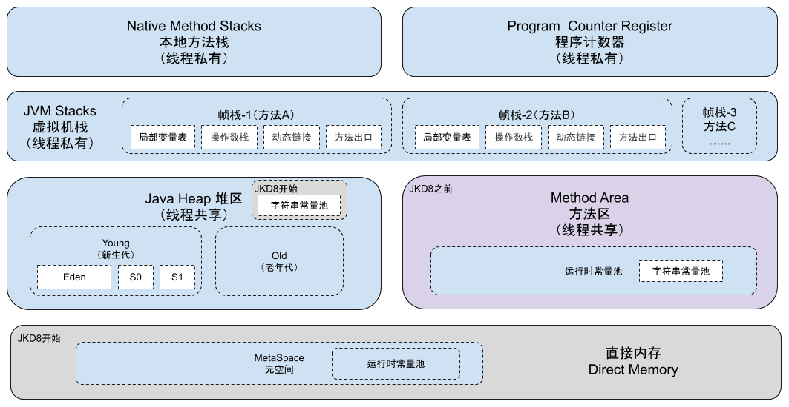
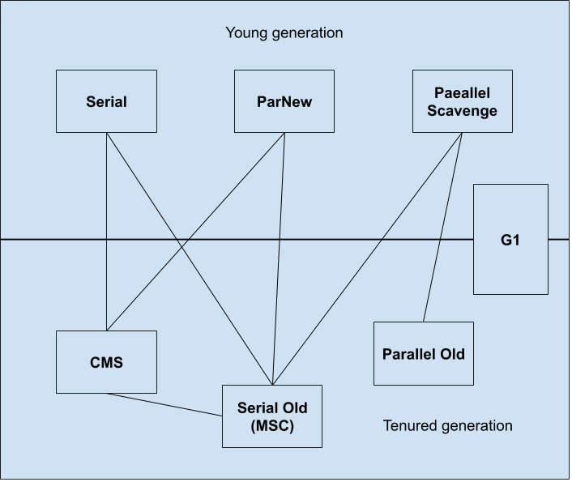
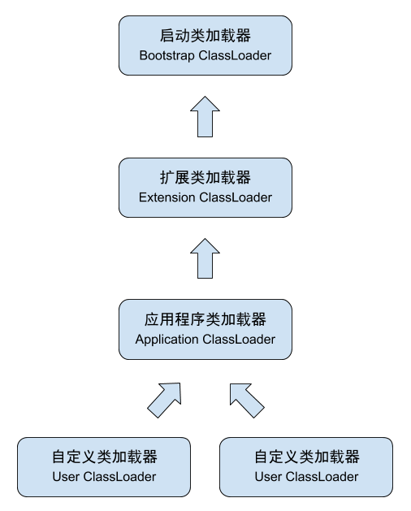

1.概述
JVM是Java Virtual Machine（Java虚拟机）的缩写，是一种用于计算设备的规范，它是一个虚构出来的计算机，是通过在实际的计算机上仿真模拟各种计算机功能来实现的。
Java语言的一个非常重要的特点——跨平台性，也是通过Java虚拟机实现的。JVM屏蔽了与底层操作系统平台相关的信息，使得Java程序只需在JVM上运行目标字节码，便能实现在Java虚拟机上“一次编译，多次运行”。Java虚拟机主要分为五大模块：运行时数据区、类装载器子系统、执行引擎、本地方法接口和垃圾收集模块。
2.运行时数据区

运行时数据区是Java虚拟机在执行Java程序过程中把它所管理的内存按照不同的用途和概念划分为不同的数据区域。这些区域的作用、服务对象等可以见深入理解JVM—运行时数据区。
3.垃圾收集算法与内存分配
在主流的商用程序语言中，都在使用可达性分析算法来判断对象是否存活，原因是引用计数法难以处理对象之间互相引用的问题。可达性分析算法其本质是通过一系列的GC Roots作为起始点来遍历引用链，若搜索过程中没有发现该节点，则认为节点不可达则回收。
分代收集算法根据不同对象的存活周期来将内存分为几块区域，不同的区域按照不同的垃圾收集方式来进行GC。
在GC过程中，虚拟机需要枚举根节点来判断链路是否可达，且这一过程中执行系统的引用链不能在变化（导致STW出现的一个重要原因），所以枚举根节点的过程需要尽可能的快速且精准，虚拟机利用JIT（JIT编译器知道堆栈帧信息和寄存器内容）来记录关键节点的指令来达到此目的，而这些节点就被称为安全点。而安全区域则是指一段代码片中，引用关系不会发生变化，可以看作是安全点的一个扩展。关于安全点的详细介绍以及具体的垃圾收集器可以见深入理解JVM—垃圾收集器与内存分配策略，下图是不同的垃圾收集器作用区域。
4.虚拟机类加载机制
类加载过程按照顺序分为加载、验证、准备、解析、初始化、使用和卸载七个阶段。
类加载器作为一个“获取类的二进制字节流”的动作的代码模块，从Java角度分为三种类型，分别是启动类加载器、扩展类加载器和应用程序类加载器。应用程序按照双亲委派模型来加载类，双亲委派模型保证来Java类随着它的类加载器一起具备了一种带有优先级的层次关系，保证了程序的稳定运行。 关于类加载器的详细信息可见深入理解JVM—虚拟机类加载机制。
5.Java内存模型
Java内存模型规定了所有的变量都储存在主存中，每条线程还有自己的工作内存，工作内存中保存被该线程使用到的变量的主内存的拷贝副本。
volatile型变量保证了其对所有线程可见性，并且还利用内存屏障来禁止指令重排序，但由于volatile变量只能保证可见性，在不符合以下两条规则的场景中需要加锁来保证原子性。
- 运算结果并不依赖变量的当前值，或者能够确保只有单一的线程修改变量的值。
- 变量不需要与其他的状态变量共同参与不变约束。
Java内存模型是围绕着在并发过程中如何处理原子性、可见性和有序性这3个特征来建立的。
Java语言中的线程安全是指当多个线程访问一个对象时，如果不用考虑这些线程在运行时环境下调度和交替执行，也不需要进行额外的同步，或者在调用方进行任何其他的协调操作，调用这个对象的行为都可以获得正确的结果，那这个对象是线程安全的。而实现内存安全的方式有互斥同步（比如synchronized、ReentrantLock）、非阻塞同步（CAS）或者不涉及共享数据（比如可重入代码、线程本地存储）。
关于锁的优化和线程安全的具体实现方式可以见深入理解JVM—Java内存模型与线程。
6.总结
查看大图